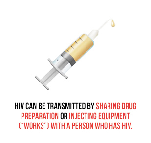
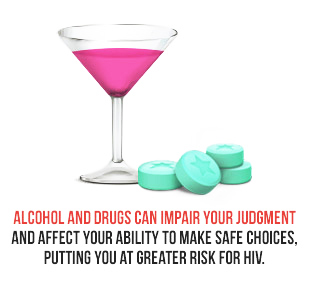
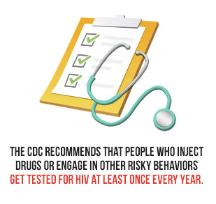

How Are Drug Use And HIV Related?
Alcohol and other drug use can play a significant role in the spread of HIV. For example:
- Injection drug use is one of the causes of HIV in the United States and is responsible for approximately 10% of HIV cases annually.
- If you inject drugs, you can get HIV from sharing drug preparation or injecting equipment (“works”) with a person who has HIV. You can also then pass HIV to your sex and drug-using partners.
- Drinking alcohol or taking other drugs can increase your risk for HIV and other sexually transmitted diseases (STDs). Being drunk or high affects your ability to make safe choices and lowers your inhibitions, leading you to take risks you are less likely to take when sober, such as having sex without a condom or sex with multiple partners.
- Transactional sex (trading sex for drugs or money) can also increase your risk for getting HIV.
- If you use drugs, you at are a higher risk for HIV infection and therefore should seek HIV testing. Use the HIV/AIDS Prevention and Services Locator to find a HIV testing site near you.
- If you already have HIV, drinking alcohol or taking other drugs can affect your immune system and may speed up the progression of the disease. Drinking or taking drugs also can affect your HIV treatment adherence.
What Are The HIV Risks Of Using Different Types Of Drugs?
It’s important to know how different types of drugs can increase your risk of getting HIV or passing it to others.
INJECTED DRUGS
Injected drugs are drugs that are introduced into the bloodstream using a needle and syringe. Sharing drug preparation or injecting equipment ("works") can expose you to HIV-infected blood. If you share works with someone who is HIV-positive, that person’s blood can stay on needles or spread to the drug solution. In that case, you can inject HIV directly into your body.
HIV-infected blood can also get into drug solutions by:
- Using blood-contaminated syringes to prepare drugs
- Reusing water
- Reusing bottle caps, spoons, or other containers ("cookers") to dissolve drugs into water and to heat drugs solutions
- Reusing small pieces of cotton or cigarette filters ("cottons") to filter out particles that could block the needle
METHAMPHETAMINE
Methamphetamine ("meth") is a very addictive stimulant that can be snorted, smoked, or injected. It has many street names, including crystal, tina, black beauties, and more.
Meth can reduce your inhibitions and interfere with your sound judgment regarding your behavior, which may make you less likely to protect yourself or others. This increases your risk of getting or transmitting HIV infection, both through sex and injection drug use.
Even though using meth is an HIV risk factor for anyone who does it, there is a strong link between meth use and HIV transmission for men who have sex with men (MSM). Studies show that MSM who use meth may increase their sexual AND drug-use risk factors. They may:
- Use condoms less often
- Have more sex partners
- Engage in unprotected anal sex (especially as the receptive partner, which is the highest risk behavior)
- Inject meth instead of smoking or snorting it
ALCOHOL
Drinking alcohol, particularly binge drinking, can increase your risk for HIV. Being drunk affects your ability to make safe choices and lowers your inhibitions, which may lead you to take risks you are less likely to take when sober, such as having sex without a condom.
Alcohol use and abuse can also make the effects of HIV worse if you already have HIV. For example, alcohol use and abuse may make it difficult for you to follow your HIV treatment plan. In addition, alcohol abuse can contribute to health conditions such as liver disease that have an impact on the progression of HIV infection.
CRACK COCAINE
Cocaine is a powerfully addictive stimulant drug. The powdered form of cocaine is either inhaled through the nose (snorted), or dissolved in water and injected into the bloodstream. Crack is a form of cocaine that has been processed to make a rock crystal that users smoke.
If you use crack cocaine, you put yourself at risk for contracting HIV because crack impairs your judgment, which can lead to risky sexual behavior.
In addition, crack’s short-lived high and addictiveness can create a compulsive cycle in which you quickly exhaust your resources and may turn to other ways to get the drug, including trading sex for drugs or money, which increases your HIV infection risk.
Compared to nonusers, crack cocaine users report:
- A greater number of recent and lifetime sexual partners
- Infrequent condom use
- Using more than one substance
- Being less responsive to HIV prevention programs
OTHER DRUGS
Other drugs are also associated with increased risk for HIV infection. For example:
- Using “club drugs” like Ecstasy, ketamine, GHB, and poppers can alter your judgment and impair your decisions about sex or other drug use. You may be more likely to have unplanned and unprotected sex or use other drugs, including injection drugs or meth. Those behaviors can increase your risk of exposure to HIV. If you have HIV, this can also increase your risk of spreading HIV to others.
- The use of amyl nitrite (an inhalant known as “poppers”) has also been associated with HIV risk. Poppers, which are sometimes used in anal sex because they relax the sphincter, have long been linked to risky sexual behaviors, illegal drug use, and sexually transmitted infections among gay and bisexual men. They also have recently been linked to increased use among adolescents.
Injection Drug Use And Hepatitis Risk
Hepatitis is broad term referring to inflammation of the liver. This condition is most often caused by a virus. In the United States, the most common causes of viral hepatitis are hepatitis A virus (HAV), hepatitis B virus (HBV), and hepatitis C virus (HCV). HBV and HCV are common among people who are at risk for, or living with, HIV.
You can get some forms of viral hepatitis the same way you get HIV—through unprotected sexual contact and injection drug use. In fact, about 80% of HIV-infected injection drug users in the U.S. are also infected with HCV.
HCV infection sometimes results in an acute illness, but most often becomes a chronic condition that can lead to cirrhosis of the liver and liver cancer. HCV infection is more serious in people living with HIV because it leads to liver damage more quickly.
Co-infection with HCV may also affect the treatment of HIV infection.Therefore, it’s important for people who inject drugs to know whether they are also infected with HCV and, if they aren’t, to take steps to prevent infection. To find out if you are infected with HCV, ask your doctor or other healthcare provider to test your blood. HCV can be treated successfully, even in people who have HIV.
If I Use Drugs, How Can I Reduce My Risk Of HIV Infection?
If you are using drugs—including injection drugs, meth, alcohol, or other drugs—the best way to reduce your risk of HIV is to stop using drugs. Substance abuse treatment programs can help you do this.
Many substance abuse treatment programs include HIV counseling to help people stop or reduce their risk behaviors, including risky injection practices and unsafe sex, so that they can stay healthy and reduce their risk of contracting HIV or transmitting it to others.
If you are injecting drugs and believe you cannot stop using yet, here are some other things that will reduce your risk of getting HIV or transmitting it to others:
- Never use or "share” syringes (needles), water, “works,” or drug preparation equipment that has already been used by someone else.
- Use a new, sterile syringe each time you prepare and inject drugs. You can get clean needles from pharmacies or syringe services programs (often also called needle-exchange programs).
- Only use syringes that come from a reliable source (e.g., pharmacies or syringe exchange programs).
- Use sterile water to prepare drugs, such as water that has been boiled for 5 minutes or clean water from a reliable source (such as fresh tap water).
- Use a new or disinfected container ("cooker") and a new filter ("cotton") each time you prepare drugs.
- Before you inject, clean the injection site with a new alcohol swab.
- Safely dispose of syringes after one use.